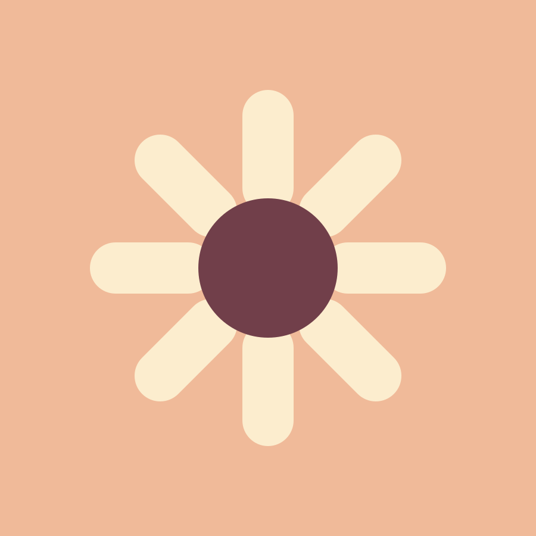
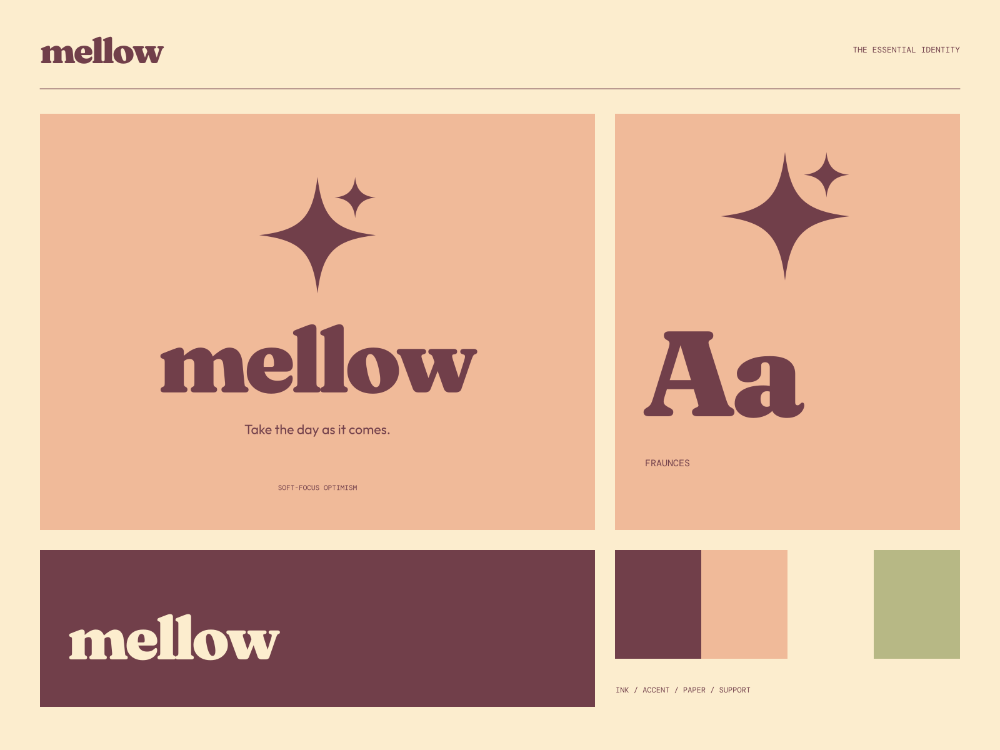

01
A warm beginning
Everyday objects with a generous, easygoing personality.
GOOD OBJECTS / SOFT LANDINGS
Take the day as it comes. Make yourself a little more at home.

A coherent little world
Make yourself a little more at home. Take the day as it comes.
01
Everyday objects with a generous, easygoing personality.
02
Form and texture that make a place feel more like yours.
03
A collection that leaves room for your own rhythm.

The point of view
Rounded sunburst ceramics, grooved color bands, hand-friendly shapes, and delightfully plump serif lettering. Nostalgia becomes an optimistic, useful everyday system.